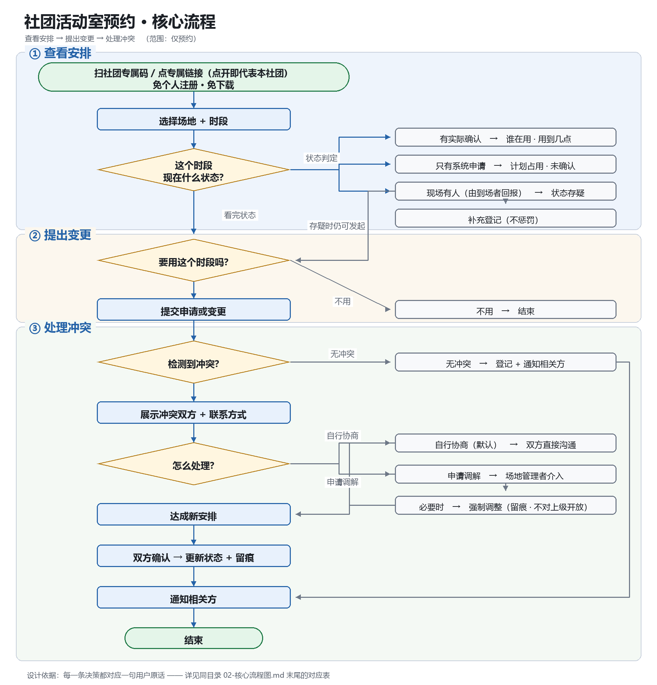

社团活动室预约
让「现在到底谁在用这间房」成为所有相关方都能看到、随变更同步的事实。
01目标用户
两个角色的痛点同源、方向相反
| 角色 | 是谁 | 行为特征 |
|---|---|---|
| 主要 | 高频社团活动组织者 | 自己排期、自己协调、自己承担后果。如甲（每周 4–5 次） |
| 次要 | 场地管理者（社联干事） | 受理咨询、现场协调、管钥匙。丙（每天 1–8 次咨询，全部走微信私聊） |
| 边界对照 | 低频组织者 | 乙（每 1–2 周 1 次）——不在服务范围内，用来界定边界 |
| 不服务 | 学校 / 上级 | 需要报表，但不是使用者 |
用户「不知道能不能用」，管理者「不知道谁在用」——同一个缺口，两侧都在承担。
02核心痛点
占用状态没有单一事实来源 复现 2（复现 = 不同人各自独立经历，与「佐证」不混算，详见 §06）
「我手里有系统，但系统只记'申请'；我手里有钥匙本，但那个只记'借还'。这两个东西对不上，而真正在里面的是人。」
场地管理干事 · 丙
| 角色 | 原话 |
|---|---|
| 甲（用户） | 「我永远不确定那个房间到底是不是我们的」 |
| 丙（管理者） | 「你要我说现在 2 号房有没有人，我答不上来」 |
| 乙（用户） | 「想要的时间被占了，还得重新协调时间、通知社员」——预约时即发现，系统正常工作（作反例，不计入复现） |
乙正常走了学校预约系统，在预约那一刻就发现时段被占——系统在这里是正常工作的。他的情况说明这个痛点是选择性的，不是所有人都遇到，因此不能算作同一个问题的第二次独立复现。
03产品定位
做一个预约系统
让占用状态成为相关方都能看到、随变更同步的事实
学校已经有预约系统：乙在正常使用它，甲在绕过它——
「严格说，我们没'预约'过。我是宣布了一下，就当占了。」
音乐协会会长 · 甲
缺的不是流程，是事实。
适用边界
它解决高频场景的累积成本，不是低频场景的单次麻烦。甲（每周 4–5 次）痛感高；乙（每 1–2 周 1 次）原话「频率不算高，我也不确定专门使用一个新工具是否值得」。两人社团规模接近（50 vs 40 人）、工具几乎相同，差异只在频率，约 6–10 倍。
04核心流程
查看安排 → 提出变更 → 处理冲突

设计决策 ← 用户原话
| # | 设计决策 | 支撑原话 | 来源 |
|---|---|---|---|
| 1 | 免个人注册；每社团一个专属入口 | 「有些人在手机上填完忘了保存，或者电脑上填了手机没同步。所以基本是废的」 | 甲 |
| 2 | 状态分层（计划 / 实际 / 存疑） | 「系统只记'申请'……钥匙本只记'借还'。这两个东西对不上」 | 丙 |
| 3 | 冲突提示但不自动拦截 | 「我们没'预约'过。我是宣布了一下，就当占了」 | 甲 |
| 4 | 默认自行协商，不裁决 | 「我们每次都是这样，说了也没用」 | 甲 |
| 5 | 可人工修正、可补登记 | 属推导，材料中无直接原话 | — |
| 6 | 通知范围限定同场地同时段 | 「别在群里发就行」 | 甲 |
| 7 | 「没申请却占用」不惩罚，只补登记 | 「这个我也知道，但我管不了」（双侧默许） 设计选择，待验证（A6，见 §06） | 丙 |
05权限与状态规则
三条设计约束（来自用户原话）
| # | 约束 | 依据 |
|---|---|---|
| 1 | 低摩擦：免个人注册（每社团一个专属链接 / 二维码，点开即代表该社团）、免下载、一步完成 | 甲 / 乙 |
| 2 | 可修正：必须留人工改动入口 | 属推导 |
| 3 | 低可见度：不对学校开放 | 甲 / 丙（双侧默许） |
链接由社团负责人持有，可一键重置；重置后旧链接立即失效。
已知风险（本期接受）：社团内任何拿到链接的人都能代表该社团操作。这是为换取「免个人注册」而刻意接受的代价。
可见性矩阵
| 角色 | 能看到 | 能改 | 明确不能 |
|---|---|---|---|
| 社团使用者 | 同场地、同时段的占用状态与对方联系方式 | 本社团的状态 | 查看其他场地的全局台账 |
| 场地管理者 | 当天全部场地的占用状态；历史只保留冲突与强制调整记录 | 全部（含强制调整） | 不提供导出 |
| 学校 / 上级 | 不开放 | ||
三种状态来源，互不可信
| 来源 | 记录什么 | 可信度 | 为什么不可信 |
|---|---|---|---|
| 系统申请 | 有人打算用 | 低 | 「有的人申请了但那天没去」 |
| 实际确认 | 真的在用 | 高 | 需要有人主动确认（见假设 A5） |
| 钥匙 / 准入 | 物理进入过 | 中 | 走后门不经过钥匙 |
设计原则：不合并成单一状态字段——三个来源的差异必须对用户可见；冲突时以「实际确认」为准；每个状态都要能回答「这个结论是从哪来的」。
信息不准确时怎么办
| 情况 | 处置 | 关键约束 |
|---|---|---|
| 申请了但没人来 | 超时未确认 → 标记可释放并通知候补 | 不自动取消，需人确认 |
| 没申请却有人在用 | 一键回报 → 补充登记 | 不做惩罚（走后门是双侧默许，惩罚会直接导致弃用） |
| 双方都申请了同一时段 | 展示双方 + 联系方式，默认走协商 | 不自动裁决 |
| 状态过期未更新 | 超过有效期显示「待更新 · 最后确认于 X」 | 过期 ≠ 空闲 |
| 协商不成需强制调整 | 仅场地管理者可发起，须填写原因 | 受影响社团在专属链接内收到通知，记录留痕 |
06结论与假设
判断依据沿用项目自身的规则：没有用户侧原话支撑的方案，就是产品经理的抄作业
已确认结论（有原话 + 跨受访者核对）
| # | 结论 | 依据 | 强度 |
|---|---|---|---|
| C1 | 占用状态无单一事实来源 | 甲 + 丙 | 复现 2 |
| C2 | 非正式准入是双侧默许 | 甲（使用方）+ 丙（管理方） | 复现 2 |
| C3 | 场地冲突造成实际损失 | 甲 + 丙（5 号房）；丙对同一场冲突的描述为佐证（甲说「上学期演出前」、丙说「元旦前后」，时间对应为推断） | 复现 2 + 佐证 1 |
复现 = 不同人各自独立经历（证明痛点普遍存在）；佐证 = 不同来源描述同一次事件（证明这件事确实发生过）。佐证不计入复现——把佐证算进复现，等于把「1 件事有 2 个人证明」当成「2 件事」。
待验证假设（不能当结论用）
| # | 假设 | 状态 |
|---|---|---|
| A1 | 学校预约系统会同时接受两条冲突申请 | 待验证 需可访问的真实系统；访谈为 AI 模拟，尚未接触真实系统验证 |
| A2 | 冲突频率（上学期 3 次 / 上月 2 次） | 口述估算 无记录支撑 |
| A3 | 「申请了没来 / 没申请却占用」的比例 | 完全无数据 |
| A4 | 变更频率高到无法人工维护记录 | 口述 |
| A5 | 相关方愿意主动更新「实际占用」状态 | 决定产品成立与否 与「低摩擦」偏好有张力：到场确认会不会像共享表一样被忘掉 |
| A6 | 「不惩罚、只补登记」能让未申请的使用者愿意补登 | 设计选择 丙只证明了默许存在，没证明不惩罚有效 |
07为什么 MVP 暂时不需要 AI
痛点性质决定：状态同步，不是语义理解
丙的那句话——「系统只记申请，钥匙本只记借还，这两个东西对不上」——是两个数据源不一致，不是看不懂消息。解法是「定义状态取值 + 展示来源差异 + 提供确认动作」，全部可穷举、可测试、可回滚。
反证：如果让 AI 来推断占用状态，它需要输入（聊天记录 / 照片 / 语音），而那恰恰引入了新的不可靠源——痛点本来就是「记录不可信」。
| AI 的典型应用 | 在本场景的后果 | 依据 |
|---|---|---|
| 自动拦截冲突申请 | 固化了用户最不满意的结果 | 甲：说了也没用 |
| 自动身份核验（人脸 / 定位） | 与「低可见度」直接冲突 | 甲 + 丙 |
| 自动判定违约 / 异常 | 用户会直接弃用 | 甲（间接） |
回看全部三场访谈：没有任何一位受访者提出过任何 AI 诉求。按项目自身的判据——只提「别人都在做 AI」、没有用户侧支撑的 AI 功能 = 追热点，不是从用户出发。
若验证发现「用户不愿手动更新状态，但愿意在群里说」→ 从群聊抽取变更可能有价值。但前提是先有可信的状态模型接住它的输出，且要防群消息注入。
一句话：MVP 的敌人不是「不够智能」，是「不够可信」。
08方法与素材
| 环节 | 做了什么 |
|---|---|
| 访谈 | 3 场 AI 模拟深访（原话取自真实场景）：甲（音乐协会会长，高频）／ 乙（咖啡社长，低频）／ 丙（社联场地干事，管理侧） |
| 锚点 | 把痛点拆成可复核的条目，逐条绑原话 + 频次 + 证据强度，并区分复现 / 佐证 / 矛盾 / 待测项 |
| 工具 | 用自建的 PRD 质量门禁把素材转成结构化草稿：硬规则 H1–H10 由代码判定（章节完整性、可测性、禁用词、引用可溯源、依据不得只有竞品），软规则 S1–S5 由模型判定，另有自动打分节点与 3 份回放样本，节点自测 20 项断言全通过。确定性判断交给代码，语义判断才交给模型。本页是在这份草稿基础上做的产品判断，不是 PRD 本身（PRD 还缺验收标准与上线计划） |
| 交叉验证 | 用户侧（甲）与管理侧（丙）对 4 条关键事实独立描述一致（其中 1 条时间对应为推断） |
已知缺口
| # | 缺口 | 影响 |
|---|---|---|
| 1 | 没有普通成员（参与者）视角 | 「学生愿不愿意配合」全是组织者的转述 |
| 2 | 三位受访者全是学生 | 两级审批的设定者（教职工）不在样本内 |
| 3 | 所有数字都是口述估算 | 冲突频率、变更频率、「申请≠实际」比例全部未实测 |
| 4 | 受访者乙只有问答稿 | 无现场观察、无追问、无日期，证据等级明显低于甲、丙 |